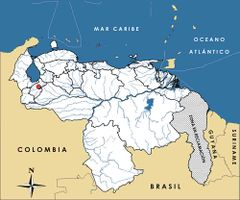

Atelopus oxyrhynchus
| Sapito Arlequín de Merida | |
|---|---|
| Riesgo de extinción | |
En peligro crítico (UICN) | |
| Clasificación científica | |
| Reino: | Animalia |
| Filo: | Chordata |
| Clase: | Amphibia |
| Orden: | Anura |
| Familia: | Bufonidae |
| Género: | Atelopus |
| Especie: | Atelopus oxyrhynchus |
| Nombre binomial | |
|
Atelopus oxyrhynchus Boulenger, 1903 | |
| Distribución | |
|
 Mapa de distribución de Atelopus oxyrhynchus | |
Contenido
= Información de Evaluación
- Categoría y Criterio Regional: En Peligro Crítico A2ace
- Fecha de Evaluación Regional: 2015
- Evaluadores: Jesús Morales-Campos y Ariany García-Rawlins
- Categoría y Criterio Global: En Peligro Crítico A2ace
Justificación
Evaluaciones Previas
1999: En Peligro (EN)
2008: En Peligro Crítico (CR)
Información General
Nombres comunes
Sapito amarillo de Mérida, ranita amarilla de Mérida, Merida harlequin frog, Merida harlequin toad.
Notas taxonómicas
Esta es una especie con una historia taxonómica muy estable desde su descripción en 1903. Solamente los siguientes usos, que consideramos lapsus calami o error involuntario, han aparecido en la literatura: Atelopus oxirriynchus y Atelopus oxyrrynchus (Yústiz 1976) y Atelopus oxyrrhynchus (Péfaur y de Pascual 1982). Con la descripción en 1974 de Atelopus carbonerensis como una subespecie de A. Oxyrhynchus (Rivero, J. A. 1974), se empezó a aplicar la combinación trinominal de Atelopus oxyrhynchus oxyrhynchus (Durant 1976, Harding 1983, Rivero, J. A. 1984), hasta que A. carbonerensis fue elevada a la categoría de especie plena en 1983 (La Marca 1983).
Sinónimos
Descripción
Se distingue por su coloración parda amarillenta en dorso y costados, que por lo general se acompaña con numerosas manchas de pardas a rojizas. Sus labios son crema o ligeramente amarillos. Dorso y flancos presentan abundantes tubérculos. Los miembros posteriores son relativamente largos y el hocico es proyectado (Ruíz-Carranza et al. 1994). Posee hábitos terrestres y diurnos; habita en los alrededores y a lo largo de quebradas pequeñas, en ocasiones debajo de raíces o rocas. Durante la época de reproducción deambula entre las quebradas localizadas en bosques húmedos montanos (Rivero, J. A. 1972, 1974, La Marca 1994c). La especie presenta un marcado dimorfismo sexual en cuanto al tamaño; los machos adultos alcanzan una talla entre 3,9 y 4,3 cm, mientras que las hembras son más grandes, y llegan a tener entre 4,5 y 4,9 cm (La Marca et al. 2005a).
Distribución
Especie endémica de los Andes de Venezuela, restringida a la cordillera merideña, donde ha sido reportada en los bosques húmedos cercanos a la ciudad de Mérida y de La Carbonera, situados a una altitud que va de los 2100 a los 3500 m (Rivero, J. A. 1972, 1974, Durant 1976, IUCN 2014). Las localidades específicas que la albergan abarcan la Sierra de La Culata en El Valle, Monte Zerpa y el río Albarregas, así como la Sierra Nevada de Mérida en La Mucuy y en la vía hacia El Morro (La Marca et al. 2005a).
- Sistema: Terrestre, Dulceacuícola
- Bioregión:
- Intervalo altitudinal (m): 2100-3500
- Endémica: Sí
Situación
Descrita para la ciencia en 1903, fue considerada como una de las especies más abundantes del género Atelopus. Se reporta que para 1978 era posible contar cerca de 50 ejemplares en un solo día. Dieciséis años después, en 1994, se observó un único ejemplar. Posteriormente no se ha logrado ningún avistamiento después de dos décadas de búsquedas periódicas en las localidades donde antes se había advertido (La Marca 1994c, La Marca y Lötters 1997). En el ámbito internacional se halla En Peligro Crítico, aunque se ha sugerido también la condición de Probablemente Extinta (La Marca et al. 2010a).
- EOO (km2): Temporalmente sin información
- AOO (km2): Temporalmente sin información
- Tendencia Poblacional: Decreciendo
Amenazas
Es probable que el sapito amarillo de Mérida enfrente las amenazas que han afectado a otras especies del mismo género en los Andes venezolanos, a saber, la infección por el hongo quítrido Batrachochytrium dendrobatidis, además de los cambios globales y las alteraciones en el clima. La disminución de las precipitaciones, así como los cambios en la temperatura durante períodos prolongados en la década de los ochenta, quizás puedan estimarse como algunas de las causas de estas menguas. Los análisis climáticos revelan que su área de distribución experimentó eventos secos severos entre 1975 y 1995, particularmente durante los años 1982-1983, 1984, 1986-1987 y 1989, algunos correlacionados con el fenómeno de «El Niño». Estas variaciones en la temperatura y humedad podrían haber desempeñado un papel importante en la reducción de la especie y en el aumento de la incidencia del hongo quítrido (La Marca et al. 2010a). De igual forma, su hábitat se encuentra amenazado y bajo presión constante, puesto que las localidades para las cuales ha sido reportada son objeto de deforestación, incendios, contaminación de cuerpos de agua y otras intervenciones.
Conservación
En nuestro territorio es declarada Especie En Peligro de Extinción mediante el decreto N° 1486 (del 11 de septiembre de 1996) (Venezuela 1996b). Su área de distribución se encuentra parcialmente resguardada gracias a su distribución en escenarios amparados por la figura legal del parque nacional Sierra Nevada, pero aún no se ha evaluado cuán efectiva es esta protección para la especie. Se sugiere examinar la calidad del hábitat de que dispone (tanto terrestre como acuático), además de efectuar análisis sobre las diversas causas o factores naturales y/o antrópicos que pudieron ocasionar la dramática disminución de sus poblaciones. Adicionalmente, se requieren estudios para determinar su estatus poblacional actual y tomar medidas más estrictas en cuanto a la salvaguarda de su hábitat y área de distribución. De localizarse ejemplares de este sapito, se podría evaluar la alternativa de su cría en cautiverio con fines de repoblación, aunque es importante resaltar que el mantenimiento de Atelopus es difícil y constituye una labor muy especializada. Los esfuerzos en otros países solo han conseguido éxitos parciales con especies que viven en bajas elevaciones. Esta última medida únicamente se recomienda ante la situación de emergencia del género, y sus resultados dependerán de la imprescindible alianza entre agencias gubernamentales, científicos, conservacionistas e inversores privados (La Marca 2008a).
Autorías
Autores originales
Enrique La Marca
Colaboradores
Ilustrador
Ximenamaria Rausseo
Referencias
- Durant, P. (1976). Analogías y diferencias sero-ovoproteicas entre dos especies del género Atelopus (Amphibia: Salientia) de los Andes venezolanos. Acta Científica Venezolana 27: 79-84.
- Harding, K. A. (1983). Catalogue of New World Amphibians. Pergamon Press: xiv+406.
- IUCN (2014). The IUCN Red List of Threatened Species. Version 2014.3. Accesible en www.iucnredlist.org.
- La Marca, E. (1983). A new frog of the genus Atelopus (Anura: Bufonidae) from a Venezuelan cloud forest. Milwakee Public Museum, Contributions in Biology and Geology 54: 1-12.
- La Marca, E. (1994c). Ecología de anfibios en dos ambientes contrastantes (selva nublada y páramo) de la cordillera de Mérida, Venezuela. Anuario de Investigación 1991. Mérida: Universidad de los Andes, Instituto de Geografía y Conservación de los Recursos Naturales: 75-76.
- La Marca, E. (2008a). Sapito amarillo de Mérida, Atelopus oxyrhynchus Boulenger 1903. Página: 196. En: Rodríguez, J. P. y Rojas-Suárez, F. (Eds.). Libro Rojo de la Fauna Venezolana (2a ed. reimp.). Provita, Fundación Polar. Caracas.
- La Marca, E. (2015). Sapito amarillo de Mérida, Atelopus oxyrhynchus. En: J.P. Rodríguez, A. García-Rawlins y F. Rojas-Suárez (eds.) Libro Rojo de la Fauna Venezolana. Cuarta edición. Provita y Fundación Empresas Polar, Caracas, Venezuela. Recuperado de: animalesamenazados.provita.org.ve/content/sapito-amarillo-de-merida Vie, 13/04/2018 - 07:58
- La Marca, E., Albornoz, R. y García, I. (2005a). Atelopus oxyrhynchus. Página: 96. En: Rueda Almonacid, J. V., Rodríguez Mahecha, J. V., La Marca, E., Lötters, S., Kahn, T. y Angulo, A. (Eds.). Ranas Arlequines. Serie Libretas de Campo Nº 5. Conservación Internacional. Bogotá, Colombia.
- La Marca, E., García, I., Albornoz, R. y García-Pérez, J. E. (2010a). Atelopus oxyrhynchus. The IUCN Red List of Threatened Species. Version 2014.1. Disponible en www.iucnredlist.org, consultada el 26 de junio de 2014.
- La Marca, E. y Lötters, S. (1997). Monitoring of declines in Venezuelan Atelopus (Amphibia: Anura: Bufonidae). Páginas: 207-213. En: La Marca, E. y Lötters, S. (Eds.). Herpetologia Bonnensis. Societas Europeae Herpetologicae. Bonn, Alemania.
- Péfaur, J. E. y de Pascual, A. (1982). Aspectos biogeográficos de las comunidades de anfibios y saurios de Los Andes venezolanos. Actas 8vo Congreso Latinoamericano de Zoología (octubre 1980, Mérida, Venezuela): 229-261.
- Rivero, J. A. (1972). On Atelopus oxyrhynchus Boulenger (Amphibia, Salientia), with the description of a new race and a related new species from the Venezuelan paramos. Boletín de la Sociedad Venezolana de Ciencias Naturales 29: 600-612.
- Rivero, J. A. (1974). ("1972") On Atelopus oxyrhynchus Boulenger (Amphibia, Salientia), with the description of a new race and a related new species from the Venezuelan paramos. Boletín de la Sociedad Venezolana de Ciencias Naturales 29: 600-612.
- Rivero, J. A. (1984). Notas sobre los anfibios de Venezuela. IV. Una nueva especie de Atelopus (Amphibia: Bufonidae) de los Andes, con anotaciones sobre el posible origen del género en Venezuela. Memoria. Sociedad de Ciencias Naturales La Salle 40(114): 129-139.
- Rodríguez, J. P. y Rojas-Suárez, F. (1999). Libro Rojo de la Fauna Venezolana, segunda edición. PROVITA, Fundación Polar. Caracas. 444 pp.
- Rodríguez, J. P. y Rojas-Suárez, F. (Eds.) (2008). Libro Rojo de la Fauna Venezolana, tercera edición. Provita y Shell Venezuela, S. A. Caracas, Venezuela. 364 pp.
- Ruíz-Carranza, P. M., Ardila-Robayo, M. C. y Hernández-Camacho, J. I. (1994). Tres nuevas especies de Atelopus A.M.C. Dumeril & Bibron 1841 (Amphibia: Bufonidae) de la Sierra Nevada de Santa Marta, Colombia. Revista de la Academia Colombiana de Ciencias Exactas, Físicas y Naturales 19(72): 153-164.
- Venezuela. (1996b). Decreto 1486: Especies en Peligro de Extinción. Gaceta Oficial No. 36.062- 10 de octubre de 1996. Caracas.
- Yústiz, E. (1976). Anfibios y ofidios del Parque Nacional Yacambú. Comunicación Preliminar. Tarea Común. Revista de la Universidad Centro-Occidental de Barquisimeto, Venezuela (2): 75-80.